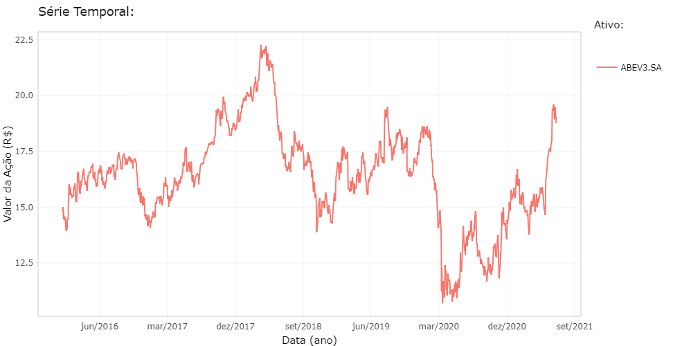
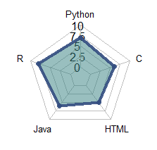

João Victor Magalhães Souza

Olá, eu sou estudante de Ciência da Computação pela Universidade Federal de Viçosa
- Campus Florestal. Sou um grande entusiasta pela área de Ciência dos Dados, pela qual dedico grande parte do meu tempo
pesquisando e produzindo artefatos computacionais atualmente.
Corriqueiramente, também me deparo lendo produções nas áreas de Machine Learning, Inteligência Artificial e Big Data,
as quais, por enquanto, apenas consumo conteúdo.
Portfólio
"Criação de Shiny dashboards através da análise de ações da Bolsa de Valores de São Paulo"
Informações
Este projeto está sendo desenvolvido via Trabalho de Iniciação Científica conjuntamente com o professor Dr. Fernando de Souza Bastos, da Universidade Federal de
Viçosa - Campus Florestal, no ano de 2021. A nossa proposta
é promover o ensino de Estatística e Matemática Financeira bem como facilitar as análises do mercado de ações de pessoas interessadas na área.
Nós desenvolvemos a aplicação utilizando a linguagem R como mecanismo de produção analítica dos dados, fornecidos pelo Yahoo Finance e, dessa forma, mostramos os dashboards através de uma interface de usuário amigável
produzida pelo pacote Shiny.
Resultados
*Passe o ponteiro para ampliar as imagens

Documentação e Artefatos
A versão BETA pode ser acessada clicando aqui.
"Monitoria na disciplina CCF 100 - Introdução à Programação"
Informações
Este trabalho de Monitoria foi feito durante o 1º Semestre letivo do ano de 2021,
durante o Período Especial Remoto 2, na Universidade Federal de Viçosa - Campus Florestal. O objetivo era atuar como monitor dos alunos da disciplina
CCF 100 - Introdução à Programação durante todo o semestre letivo.
Encargos
- Atendimento contínuo via email e encontros síncronos ;
- Resolução de listas de exercícios e avaliações ;
- Resolução de dúvidas teóricas/práticas ;
- Elaboração de relatórios de produtividade mensais.
Aprendizados
- Diferentes formas de encontrar e expor soluções ;
- Relacionamento interpessoal ;
- Gerenciamento e organização de tempo ;
- Consolidação de bases teórico-práticas ;
- Mensuração das atividades produzidas.
"Skills Valuation - 2021"

 : Trabalhei especificamente com DataPrep, DataAnalitycs e DataVisualization. Os projetos envolviam conjuntos de dados de tamanho médio, cuja atualização era feita dinâmica e diariamente.
Tais projetos objetivavam filtrar informações de alguns Bancos de Dados brutos, fazer análises das informações mais relevantes e, dessa forma, construir Data Frames mais eloquentes, que sanassem nossas necessidades mais diretamente e com um volume
menor de dados. Por fim, a apresentação dos resultados era feita, frequentemente, utilizando dashboards com o uso das libs: ggplot, ggplot2 e plotly, exportando-os para interfaces gráficas
construídas com o pacote Shiny.
Alguns resultados podem ser consultados nesse Porfólio.
: Trabalhei especificamente com DataPrep, DataAnalitycs e DataVisualization. Os projetos envolviam conjuntos de dados de tamanho médio, cuja atualização era feita dinâmica e diariamente.
Tais projetos objetivavam filtrar informações de alguns Bancos de Dados brutos, fazer análises das informações mais relevantes e, dessa forma, construir Data Frames mais eloquentes, que sanassem nossas necessidades mais diretamente e com um volume
menor de dados. Por fim, a apresentação dos resultados era feita, frequentemente, utilizando dashboards com o uso das libs: ggplot, ggplot2 e plotly, exportando-os para interfaces gráficas
construídas com o pacote Shiny.
Alguns resultados podem ser consultados nesse Porfólio.
 : Tive contato com implementação de meta-heurísticas mais triviais e com simulação de comunicação entre processos através da utilização de pipe. Além disso, na área de Análise de Dados,
utilizei as bibliotecas pandas e Jupyter para realizar análises de dados.
: Tive contato com implementação de meta-heurísticas mais triviais e com simulação de comunicação entre processos através da utilização de pipe. Além disso, na área de Análise de Dados,
utilizei as bibliotecas pandas e Jupyter para realizar análises de dados.
 : Criação de uma aplicação Java para gestão comercial. O projeto contava com implementação de interface de usuário e utilização do modelo MVC como padrão de projeto. Abrupto contato relativo à comunicação e manipulação de Bancos de Dados
via biblioteca Hibernate.
: Criação de uma aplicação Java para gestão comercial. O projeto contava com implementação de interface de usuário e utilização do modelo MVC como padrão de projeto. Abrupto contato relativo à comunicação e manipulação de Bancos de Dados
via biblioteca Hibernate.
 : Utilização para criação e consolidação da lógica de programação com a realização de exercícios na plataforma URI Online Judge Construção de algumas
das Estruturas de Dados mais relevantes como Árvores, Listas, Fila, Pilha e algoritmos de ordenação.
: Utilização para criação e consolidação da lógica de programação com a realização de exercícios na plataforma URI Online Judge Construção de algumas
das Estruturas de Dados mais relevantes como Árvores, Listas, Fila, Pilha e algoritmos de ordenação.